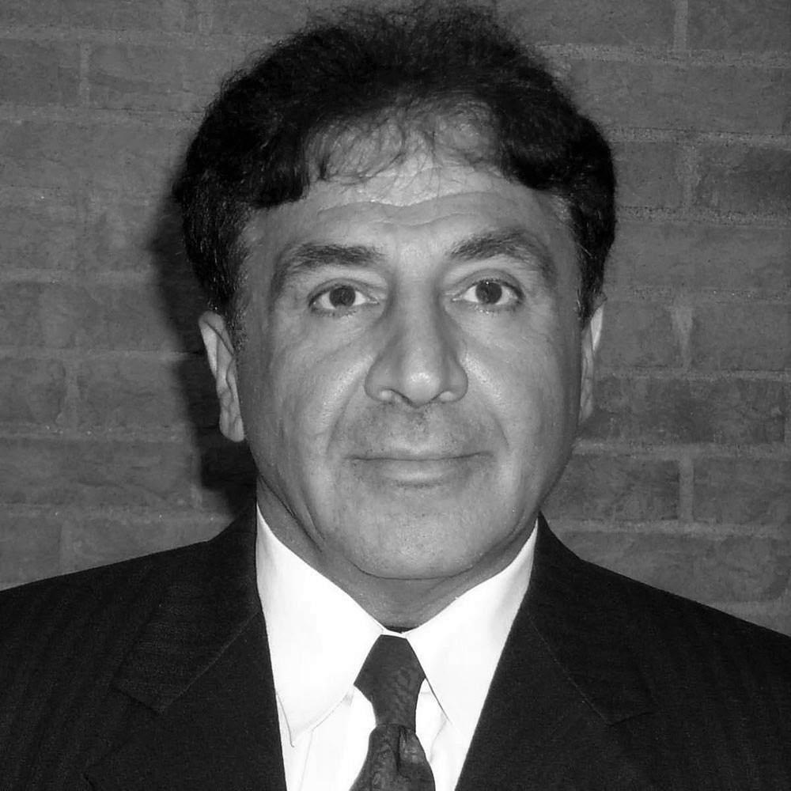
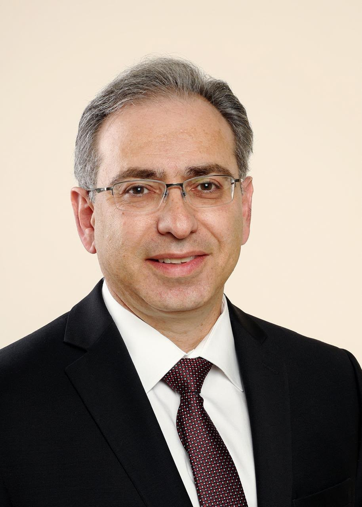
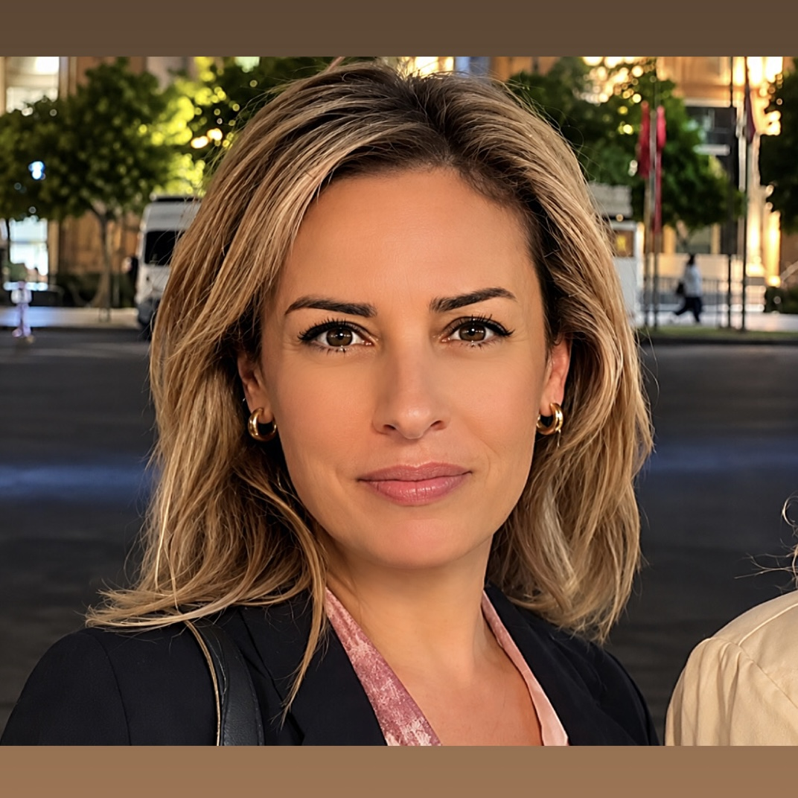

Sustainable Mining
Encouraging responsible practices that balance development, environment, and local communities.
Armenian-International Mining and Metallurgy Society
AIMMS connects professionals, academics, and industry partners to share technical knowledge, discuss global trends, and support responsible development in Armenia’s minerals sector.
About AIMMS
AIMMS creates a professional space where Armenian and international mining and metallurgy specialists can exchange experience, discuss best practices, and identify the needs of the sector in Armenia.
The society’s work is centered on practical dialogue: technical events, professional networking, responsible mining conversations, and the transfer of international experience into Armenia’s mining ecosystem.
Core focus
We promote technical knowledge, responsible practices, international cooperation, and innovation across the minerals sector.
Encouraging responsible practices that balance development, environment, and local communities.
Sharing expertise in metallurgy, processing, geology, engineering, and resource development.
Connecting Armenia-based stakeholders with international professionals, institutions, and researchers.
Exploring innovation, process optimization, ESG, and global trends in minerals development.
Featured event
Explore technical workshops, forums, and professional discussions connecting mining and metallurgy specialists.
See all eventsFeatured workshop
A workshop focused on process optimization, sustainability, and practical approaches for Armenia’s mining sector.
Steering Committee

Chairman
Mining engineer and mineral economist focused on mining investment, international finance, policy, and responsible industry best practices.

President
Senior hydrometallurgist and technology leader with over 23 years of experience in critical minerals, metals, and emerging processes.

Vice President · Armenia Representative
Mining sector professional with more than 20 years of experience in diaspora engagement, stakeholder relations, and international cooperation.

Steering Committee Member
Communications and ESG advisor with 20 years of experience in public relations, stakeholder management, and corporate communications.
Get in touch
Contact AIMMS for professional networking, event participation, technical discussions, and society inquiries.